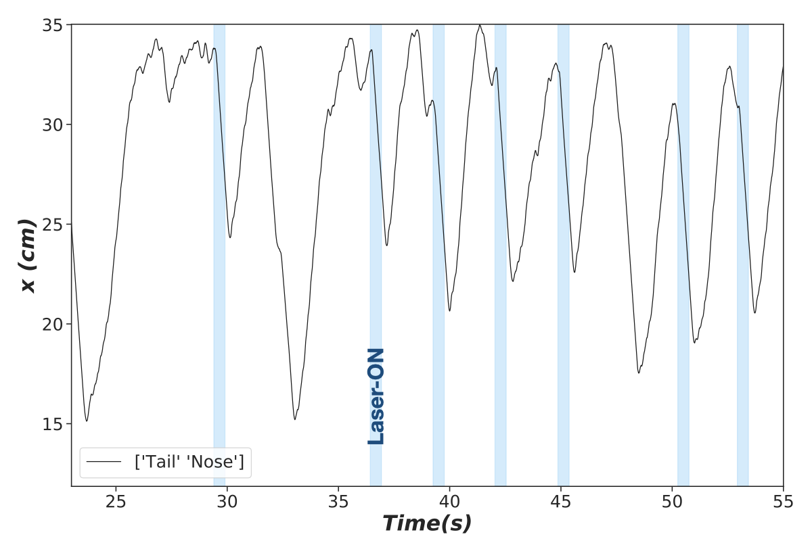

Locomotion Task Analysis¶
File hierarchy¶
The root directory to your project should have this hierarchy:
root
|-- Animal_Type_1 <-- all data for one specific animal type e.g. 'FoxP2-Cre'
| |-- ChR2 <-- Optogenetic expression
| | |-- Animal_0 <-- data for one animal in that animal type.
| | | |-- Protocol_0 <-- folders separate protocols e.g. 'Square_1_mW'
| | | | |-- DLC <-- contains body part trackings of all sessions derived from DLC
| | | | | |-- session_0_DLC.xlsx
| | | | | .
| | | | | .
| | | | |-- Laser <-- contains laser detection files
| | | | |-- session_0_laser.xlsx
| | | | |-- session_1_laser.xlsx
| | | | .
| | | | .
| | | .
| | | .
| | | |-- Protocol_n
| | | |
| | | `-- Spontaneous <-- Same everything just for Spontaneous sessions
| | | `DLC <-- only DLC folder since there's no laser
| | |
| | |-- Animal_1 <-- same for all other animals
| | .
| | .
| | |
| | `-- Animal_n
| `-- Control
| |-- Animal_0
| .
| `-- Animal_m
|
|-- Animal_Type_1
|
|
|-- Animal_Type_n <-- same for all other animal types
|
|-- data_npz
| |-- Protocol_0
| | |-- ChR2
| . `-- Control
| .
| |
| `-- Protocol_n
|
`-- Subplots
Jupyter notebook¶
Here you will find the jupyter notebook that contains different aspects of Locomotion task data analysis.
In the same location you would also find the Locomotion.py moodule used for this analysis. Here’s the documentation for its functions.
In order to start work on data analysis, you have to first fix some parameters specified under heading Constants:
video_height : the height of video in pixels
video_width : the width in pixels
fps : number of frames per second of video
left_edge_x : left end of treadmil in the frame in pixels
right_edge_x : right end of treadmil in the frame in pixels
treadmill_len : True length of the treadmill in cm
elec_shock : length of the electro shock section of the treadmil in cm
treadmil_velocity : velocity of the treadmill during task in cm/s
interval_in_sec : duration of stimulation in sec
pre_stim_interval : pre stimulus interval in sec for looking at x ,v and acceleration
pre_stim_interval_measure : pre stimulus interval in seconds for the laser-OFF epoch before laser
post_stim_interval_measure : pre stimulus interval in seconds for the laser-OFF epoch after stimulation
n_timebin : number of frames for diffrentriation of position to yield velocity
window_pos : moving average window for position curve smoothing
window_veloc : moving average window for velocity curve smoothing
max_speed : the presumed max speed of the animal to use for misdetections
mouse_no_dict : Animal number dictionary. Every item is a tuple of two lists, first element represents ChR2 animals and second element the Control
e.g.
{'D2' : ([156, 165, 166, 195, 196, 198, 199],[172, 178]),
'Vglut2':([116, 117, 118, 119, 164, 165, 166],[359, 360]),
'FoxP2':([8, 9, 10, 11, 24, 27],[23, 26])}
pre_direct : path to the root directory shown above
Data analysis¶
We first extract sessions from the readings obtained from the DeepLabCut package :
{kind=link}
Where the blue shades show the intervals with laser stimulation.
We then extract all the windows that contain a certain period (pre_stim_interval_measure) before laser onset, the duration of laser and (interval_in_sec) and a period after (post_stim_interval_measure).
{kind=link}
If the experimenter has provided sessions with no laser stimulation (blak like, here addressed as Spontaneous), we extraced the same number of trials from those sessions and plots them together to have an internal control.
- You will find the chance to assess your data through a variety of options:
look at single trials of specific animals,
averages of all or specific sessions for individual animals and all the animals at once.
You would also be able to categorize trials based on their charecteristics in the miliseconds prior to lase stimulation to see how the intial conditions would change the behavior during laser stimulation.
compare average of a chosen measure position, velocity or acceleration within an animal type group or between groups or for different animal groups with different optogenetic expression
distribution of pre laser position for individual animals
Compare the effect of simultaneous or separate laser stimulation in different brain areas within the same animal group e.g. stimulation of Subthalamic nucleus and External Globus Pallidus in Vglut2-Cre transgenic animals.